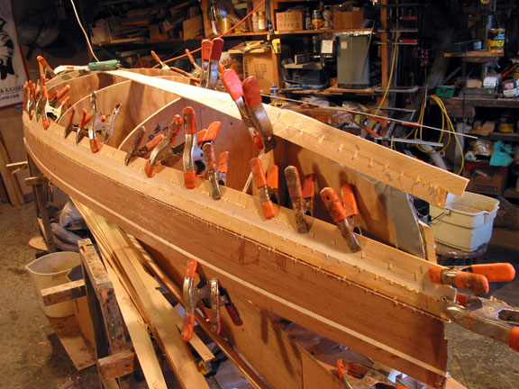

Shop Tips continued....
Updated 02/06/16 Stapleless Stripping
When you work on your boat you spend most of the time with your nose about three inches from the boat. You see those staple holes and they look big.A lot of energy, talk and time have been spent hiding, filling and figuring out stapleless stripping methods. The only time I notice staple holes on a boat is when I'm pointing them out to someone as I explain how a stripper is built on forms.
I've seen many stripper boats that looked great with staple holes, and I never noticed them when we weren't talking about staples.
I don't have confidence in any stapleless stripping method that doesn't somehow keep each strip in contact with the stations and stems.
Most stapleless stripping methods use clamps to hold strips in place and against the forms until the glue has set. Then when the clamps are removed to add a new strip, the previous strips are free to move away from the forms. If they can move, they will move, and cause misaligned strips and improper hull shape. The clamps, bands, and tape, people use to hold their strip in place until the glue joint dries, allows only a couple strips to be applied per day!
This is not acceptable to me. If there is nothing continuously holding each of your strips to the stations and stems, how can you expect them not to move, shift and come away from the forms? Ever hear of Murphy's Law?
And I have to make a couple dollars an hour so I can't stop stripping for glue to dry.
The only stapleless method I know of that is simple, fast, and keeps the strips attached to the forms, is the hot glue stapleless method I use.
If you are a first time strip builder building stapleless, I suggest you use my hot glue method to strip.
It will be fast and fun.
Stapleless Stripping with Hot Glue
Hot Glue
What is hot glue? Hot glue is a thermal plastic that is heated in a hot glue gun, to become a very hot, very sticky liquid used to tack parts together. Hot glue hardens back into a solid in 60 to 120 seconds. Hot glue makes assembly of parts very fast. Hot glue can hold pieces that are impossible to hold with clamps. Hot Glue Gun loaded with hot glue stick, at right.Hot Glue is best thought of as a clamp rather than a traditional glue. Hot glue is not good for permanent bonds.
Caution! Melted Hot Glue is around 350˚ and will burn skin on contact. Keep fingers away from melted liquid hot glue!
There are many different hot glue formulas. Most hot glue sticks sold in hardware stores are for crafts, and do not work well on wood. You must search for a hot glue online company, to buy a formula of hot glue intended for use with wood. I list the hot glue and glue guns I use further down in the text.
Hot glue is best thought of as a clamp rather than a traditional glue. It is not good at permanent bonds. Large or long surfaces are difficult to join with hot glue since it sets in seconds. Hot glue can be used to tack and preassemble parts to be screwed together, like a strongback. It is difficult to make a very tight joint on a large pieces, because by the time you put on a clamp, the hot glue will have set.
The trick to using hot glue as a clamp is that it will release cleanly when it is sheared off by a HARD blow from the side. The brittle plastic will break loose with a hard blow of a hammer.
Wood strips used in stripping a hull, must be bonded edge to edge with a glue like yellow carpenters glue NOT hot glue.
Small parts that would be dangerous to hand hold when using power tools, can be hot glued to a larger scrap of wood to keep fingers safely away from hazard.
This is a very important trick to remember and could save you a lot of grief!!!
I've used hot glue in my shop and in stapleless stripping for twenty years. The more you use it, the more ideas you come up with for uses.
Rob's Hot Glue Tips
for Fast Staple-less Stripping
I like hot glue. I learned to use hot glue in working as a professional wood worker to make all kinds of jigs. Most woodworkers know what a great tool hot glue is for the temporary holding of pieces of wood.Think of hot glue as a clamp not a glue. You can use hot glue in places you can't get a clamp to fit, or places you can hold something with your hand but not a clamp.
Never use hot glue in a permanent application like bonding strip to strip on your boat.
Remember, the trick to using hot glue is that it will release cleanly when it is sheared off by a blow from the side.
This can be done with a scraper to knock off glue beads or scrap strip pieces tacked with hot glue. Or you can use a mallet to knock out stations from a hull stripped with hot glue.
I use 3/16" strips, which are more flexible than 1/4", on all my boats.
Hull stems are the most difficult areas to strip because they have the most twisted and bent strips. I use northern white cedar for my hull bottoms because northern white cedar is the most flexible and easily bent wood for strippers. And I use a heat gun to twist and bend strips so I don't need force to hold strips in place. See heat gun use.
Hot Glue
Pros; Hot glue leaves no holes. Hot glue has good holding power if the glue has enough time to harden thoroughly. A good option is to use hot glue for the deck even if you use brads or staples for the hull.Cons; Strips must be held in place by hand or with some type of clamping method for at least a minute for the glue to achieve full holding power. The process is slower than staples.
Get the Right Hot glue, one specifically for bonding wood. Do a web search for "hot glue sticks for wood". Look for 7/16" x 10" glue sticks designed for bonding wood. You can try 1 pound samples to see which work best for you, then I'd suggest buying 5 pounds.
A couple hot glue sources are Glu-Stix.com and Gluegun.com
Glue sticks change all the time but for now I use these woodworking glue sticks.
Buy 5 pounds so you don't run out.Hot glue gun models seem to keep coming and going and changing. I've had cordless ones and dual temperatures ones that I can't seem to find anymore. Keep an eye out at local hardware stores. I've picked up some the best guns there. Again, they're not expensive so if you see a good one buy it!
Did I say MAKE CERTAIN the hot glue you buy is intended for use on wood.
If you try the crafts hot glue sold at stores, it will not work and you'll think, "What the heck is this guy talking about, it don't hold squat!"
Western red cedar is the best wood to use with hot glue. The glue holds well and releases without pulling out chunks of wood.
White cedar works well also, with some tear-out, if too much glue is used.
Use no more than an 1/8" diameter dot of hot glue to tack strips to stations
I use plywood stations and leave the wood bare and unsealed where I will apply hot glue. This insures maximum holding power for the hot glue. On the stems I apply duct tape so the stems will be easy to remove later. Hot glue is not used on the stems. Spring clamp strips at the stems. Two or more strips at the stems should be fixed together with a piece of scrap strip, placed perpendicular to the these strips, with hot glue.
Using Hot Glue to Strip a Boat
NOTHING YOU DO WILL BENEFIT THIS PROJECT MORE AND ELIMINATE EXTRA WORK than taking all the time you need to insure each strip edge is aligned with the previous strip and each strip is in contact and remains in contact with the forms.This is your number one job in strip building. No other part of the project deserves more attention than this.
If you do this, your hull will start off FAIR and you will need to do very little work to finish it! I cannot emphasize this enough. If after you are done stripping your hull, a strip is as much as 1/32" high, cut through the joint with a utility blade and align and re-glue the strips.
PRE-FIT EACH STRIP holding it in place with spring clamps. At the center of the hull spring clamp the new strip to the previous strip.
At the stems or any place that needs more holding power drive a sheetrock screw into the station (about 3/16" in from the edge) behind where the strip will lie and clamp the strip in place with a spring clamp. Pre drill holes if you have tear out problems.
These sheetrock screws will also be use to hold the strip in place later, while the hot glue sets.
Use a heat gun to bend or twist strips so you have little or no force needed to hold the strip in place.
Use spring clamps between stations to align strips. Use small 1" jaw opening spring clamps and angle them at 45 degrees, so they align strip edges and the base of the clamp jaw pushes the strips together at the same time! See photo below left. The strip must fit PERFECTLY. If not, do what you need to do to make it fit.
Completely clamp each new strip in place exactly where it needs to be in this pre-fitting process before you apply glue to your strip edges and tack the strip with hot glue!
Mark the alignment of each new strip to the previous one with an "X" across the strip joint with a pencil, so you won't confuse marks from one strip with past ones.
Make certain there is nothing keeping the strip from fitting tightly, like hard hot glue drips, yellow glue drips, or other debris on station edges, or the previous strip edge. This is important an easy to overlook. If the strip is fitted properly and there is no debris in the way it should fit tightly with no gaps. Your test-fit of the strip should fit perfectly with spring clamps. Remember the placement of all the clamps and what you did to make the strip fit perfectly, and the strip will fit perfectly when you are ready to apply carpenters glue to the strip edge and hot glue the strip to your forms.
Do all the above BEFORE you attempt to hot glue a strip in place. You don't want any surprises when you are working with a glue that sets in seconds.
First, apply yellow carpenter's glue to the edge of the new strip. Yellow carpenter's glue is used for the permanent bonding of strip edges.
Do not use hot glue. Hot glue is not used as a permanent bond between strips!
Starting at the center stations of your hull, apply hot glue to two stations and press the new strip in place using the alignment "X" you made earlier to ensure the strip is in the right place on the hull.
Use as small an amount of hot glue as possible usually about a 1/8" diameter drop. Small amounts of hot glue set up faster, release more easily, yet hold very well. Big blobs of hot glue drip and run and take a long time to set-up.
Apply spring clamps between stations to align strip edges.
Tack the strip to each station, working toward each stem. DO NOT hot glue strips to stem edges. Stem edges must be covered with duct tape so, the stems can be easily removed later. Spring clamp the newly hot glued strip, to the sheetrock screws, you applied in the stations near the stems.
Holding the strip in place while the hot glue hardens is okay in the middle stations but is not the best choice at the stems. It's easy to become impatient and let go too early. You may come back to this spot and find the strip has moved out of alignment. If a strip is not in the right place or if it has moved knock the strip off of the station by tapping the strip with a hammer. Clean off the old hot glue. Apply new hot glue and clamp the strip in place with a small spring clamp to the previously installed sheetrock screws in the stations.
By the time I've worked toward the second stem the first stem end's hot glue has set and I can remove the spring clamps. By the time I remove these clamps the second stem's clamps can be removed and I can go on to applying the next strip.
Clamp strips between stations with spring clamps and use beads of hot glue on the strip joint to hold the strips in alignment after the spring clamp is removed in 60 seconds.
Once I've applied the strip to the station, with hot glue (or staples on the hull bottom) I use spring clamps to align the strips and tighten the strip joint BETWEEN stations. By applying beads of hot glue on the strip joint (like stitches on a stitch-n-glue hull) I can remove the spring clamps in about a minute and apply my next strip.
When I started using hot glue to hold the strips to the stations I still had to wait for the glue to set before I could to apply the next strip, because I couldn't remove the spring clamps holding the strips in alignment between stations.
How could I get rid of the spring clamps so I could strip faster?
I knew I could use scrap strip pieces hot glued across strips to hold them in alignment instead of spring clamps. 3/4" wide strip pieces seemed like overkill.
I tried making 3/16" x 3/16" strips cut into 1/2" long pieces. This worked, but cutting all those little bits became old fast. Then I came to the idea of using the hot glue itself in the form of beads on the strip joints to keep them in alignment and it worked!
These beads (use the low setting on glue gun) must be thick, so when they cool, the thickness of the bead will be hard enough to hold the strip edges in alignment. See photo at right. If your gun doesn't have a low setting turn your gun off until it cools slightly and it will make thick beads.
When you look at the individual beads of hot glue, they are not very impressive, and you might think they can't do much. But used as a group, like the little threads that hold together seams of clothing, these beads of hot glue have very impressive holding power.
To get an idea of how well these beads can do this try placing two scrap strips together and tack along the joint with beads of hot glue. You will be impressed with how well they hold.
When you buy a glue gun try to find one with a high and low heat setting. The low setting will allow you to make beads easily.
You are unlimited in the number of new strips you can apply since all clamps are removed after 60 seconds.
All the hot glue beads are easily removed with a paint scraper along with all other traces of hot glue.
The trick to removing hot glue beads is to hold the scraper so the scraper handle is nearly perpendicular to the hull surface.THIS WILL POINT THE SCRAPER BLADE EDGE AND THE FORWARD FORCE OF THE SCRAPER, TO SHEAR OFF THE HOT GLUE CLEANLY.
An excerpt from the upcoming "Sanding and Fiberglassing" DVD shows hot glue beads being removed below.
If you have trouble removing large glue blobs, or thick scrap strips held with hot glue, use a chisel to pare away glue, or wood, before scraping.
Once the hull is stripped, and the hull is scraped, sanded and glassed, remove the hull from the strongback. Place the hull on supports with carpet slings, with the deck forms up. TRACE both sides of the station placement inside the bare wood hull interior. KNOCK the station firmly with a mallet toward the center wider section of the hull. NOW, hot glue the stations back in place with one dot of hot glue at each sheer line. This will make removal of the stations much easier after the deck is striped and glassed, and ready for separation from the hull.
Strip your deck using some of the tricks listed below.
To remove deck and hull from hot glue, start removing the deck from the stations by wedging a putty knife at the outside edges of the stations. Lift the edge of the deck JUST ENOUGH to insert a large screw driver blade / shaft or flat pry bar.
Do not pry because this could crack or stress fracture the epoxy / fiberglass on the deck.
CAUTION Please only use this knock out technique on the stations by hitting them from the side.
DO NOT PRY!
Use a very large screw driver. Or flat pry bar to reach the stations through the gap between the deck and hull. Lay the flat of the screw driver blade against the station. RAP VERY FIRMLY on the middle of the screw driver shaft with a mallet or dead blow mallet to knock out the stations without damaging the deck. Hit stations toward the center of the boat where the larger beam will facilitate removal. You will be surprised at how easily, quickly and cleanly the stations will pop out.
Hot Glue Tricks-
In difficult stripping spots you wish you had more stations.I strip my hulls from the sheer up and from the keel down. Sometimes these two surfaces don't to want align as they meet, especially near the stems. I'll use a scrap strip of northern white cedar, cut it to a 1/16" thickness for flexibility and hot glue and clamp it under the two surface edges to bring them into the same plain.
See photo at right.
This 1/16" thick cedar scrap makes it more flexible to follow the needed curve. Be very careful not to push the hull in as you hot glue one of these strips behind the surface because you will create a depression.Different thicknesses of scrap strips can be utilized to flex and form to the surface of your deck or hull and work as a clamp with hot glue.
On the bottoms of my hulls I use hot glue tricks to help add holding power in tough spots.
I hot glue short scrap pieces of strip perpendicular to the hull strips to align and support hard to hold areas while the glue on strips joints dries.
I hot glue scrap strip supports across multiple strips at the stems to clamp the stem strip together while the strip join glue dries.
When I'm beveling/ fitting short strips ends into the hull or deck I use 3/16" X 3/16" scrap pieces hot glued under strips to prevent a strip point from diving below the hull surface or to support a strip between stations. Photo at right. In tight quarters I use needle nose pliers to inset a piece of 3/16" x 3/16" strip under the strips and pull up to hot glue in place.
The fancy inset deck strip color change shown below, is supported at the strip transition by a ledger of scrap strips attached with hot glue under the deck.
I will hot glue scraps of strip on top of hull strips and apply spring clamps to close a stubborn joint.
You can use hot glue and Western red cedar scraps of different widths and thickness to clamp in any spot you can hold with your hand. The more you use hot glue the more creative you can become on using it to clamp in places you didn't think possible.
At bottom right; In a hard to clamp area, a stubborn strip is held with bar clamps hooked onto a hot glued scrap strip.
I've used hot glue to hold a router jig to cut holes
for deck fittings by applying tape to the deck first then hot glue the jig on top.
I've used hot glue to tack deck fittings under a deck while thickened epoxy cured to make a permanent bond.
Hot Glue can clamp it, if you can hold it!
Try hand beveling strips instead of bead and cove.
New Updated version of Rob's Kayak Building Instruction Book!
This book comes with all of Rob's Kayak Plans.
OR, buy it separately, and use it to build any designer's stripper kayak, faster and easier.
All the great innovations Rob pioneered are included, such as stapleless stripping using hot glue, bending strips with a heat gun and magnetic hatch covers!
Buy the Laughing Loon Building Instruction Book for Kayaks for $25 plus shipping
Laughing Loon Studio presents the next video in a series of instructional videos
detailing the building techinques of Rob Macks
Home / Pricing / Boat Orders / Plans Pricing / PLACE AN ORDER / Boats for Sale / Instruction / Videos
Kayaks / Mystic Star / Dark Star / Fire Star / Shooting Star / North Star / Ootek / Disko Bay / Georgian Bay / Panache / Twin Star tandem / Plans
Canoe Designs / Laughing Loon Tandem Canoe / Solo Portage / Wee Robbie / Wee Vera / Wee Two / Canoe Plans / Kits / Paddles
Shop Tips / Stapleless Stripping / Hand Beveling / Sanding / Transparent Lay-ups / Trips / Links